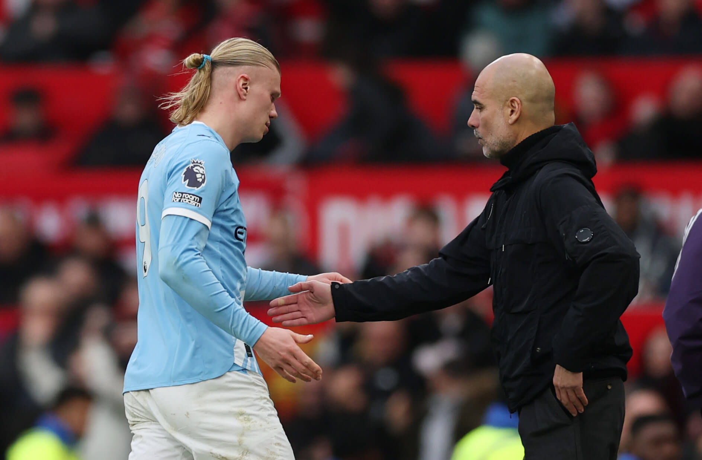

The Aftermath of the Manchester Derby
The Manchester Derby between Manchester United and Manchester City on January, 16 2026, ending with a 2-0 defeat for the citizens at Old Trafford. The game presented a shocking affair for the city fans as the team registered no shots on target throughout the game. With several fans indicating it as the worst performance across Pep Guardiola's tenure at the club, the game begs the question whether his glorious legacy is coming to an end at Manchester.
Another big question mark for the citizens has been the performance of their talisman upfront, Erling Haaland. Having not scored from open play in his past 7 games, there have been serious questions from critics about his lack of contribution to City's overall performance. Several fans have also called for him to be benched from the next game, with the return of Egyptian striker, Omar Marmoush, coming back after the African Cup of Nations
What this means for Manchester City going forward is still uncertain. With the team currently sitting 2nd in the Premier League, 5 points behind leaders Arsenal, the pressure is mounting on Guardiola and his team to perform immediately.
Here are 4 points of concern for the club moving forward:
- Haaland's lack of form upfront.
- Injury crisis at the back with Gvardiol and Dias out for a substantial period of the season remaining.
- A lack of midfield creativity.
- Pep Guardiola's tactical decisions.